This document describes common usage patterns and best practices for building multi-agent AI systems with agent-swarm-kit. It covers the fundamental patterns for setting up agents, orchestrating multi-agent workflows, integrating tools, and managing sessions. For specific API details, see Core API Functions. For implementation examples, see Examples and Testing.
The foundation of any agent swarm system involves defining agents, completions, and swarms. These components follow a dependency injection pattern where entities are registered by name and resolved at runtime.
The typical setup sequence follows this pattern:
addCompletionaddTooladdAgentaddSwarmsessionThe library uses string-based dependency injection to enable modular agent definitions:
This pattern allows agents to be defined in separate modules and connected via string constants, enabling better code organization and testability.
Multi-agent orchestration involves coordinating multiple AI agents within a single conversation session, with agents able to hand off conversations to specialized counterparts.
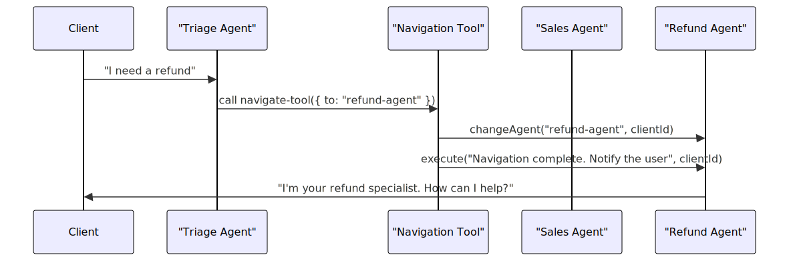
The navigation pattern uses specialized tools that call changeAgent to switch the active agent for a client session. All agents share the same message history (limited to the last 25 messages with assistant and user roles).
Each agent maintains its own system prompt and tool context while sharing conversational history, ensuring smooth handoffs between specialized agents.
Background processing enables agents to perform complex computations or data processing independently from the main chat session, similar to POSIX fork behavior.
The fork function creates completely isolated agent sessions for background processing, with automatic cleanup and error handling.
The scope pattern allows temporary schema modifications within a controlled context:
Tools provide extensibility by allowing agents to execute custom functions, integrate with external systems, and access specialized capabilities.
Tools can adapt their behavior based on the calling agent and client context, enabling sophisticated integrations.
MCP integration allows agents to seamlessly interact with external tools and services written in different languages.
Storage patterns enable agents to access persistent data and perform vector-based retrieval for RAG (Retrieval-Augmented Generation) applications.
The storage pattern combines embedding models with data sources to enable semantic search capabilities within agent conversations.
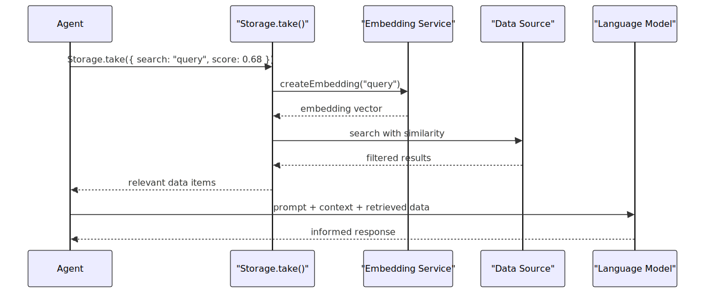
RAG implementation leverages embedding-based similarity search to provide agents with relevant context for more informed responses.
Session management handles the lifecycle of client connections, message processing, and resource cleanup in multi-user environments.
The session pattern provides clean separation between transport layer (WebSocket) and business logic (agent execution).
Proper connection disposal prevents memory leaks and ensures clean shutdown of agent sessions.
Error handling patterns ensure robust operation when agents produce invalid outputs, tools fail, or external services are unavailable.
The recovery algorithm progressively attempts to fix model outputs, finally falling back to a polite placeholder response when all recovery attempts fail.
Validation services ensure system integrity by checking configurations, dependencies, and runtime state before execution.